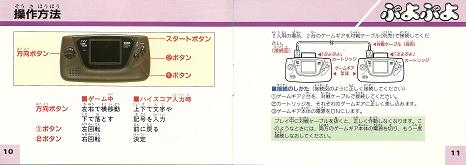

First, the box:
Next, the manual, which contains some lovely art:



Finally, a double-sided poster that came with my copy, advertising the following exciting Game Gear titles:
|
Riddick Bowe Boxing Battletoads Ecco the Dolphin Winter Olympics Buster Fight Ronald McDonald in Magical World (All due for release in 1994) |
Sonic & Tails Shining Force Gaiden Shining Force Gaiden II Madou Monogatari I Deep Duck Trouble starring Donald Duck Nazo Puyo 2 Taisen Hao-Pai Mahjong 2 Puyo Puyo |
Believe it or not, I tried my best with this, but I simply shouldn't be allowed anywhere near a scanner.
It always ends up like this: crappy and slightly off-centre.
Sadly, this may very well be the only Puyo Puyo-related article on this website...
Unless I get around to reviewing Puyo Puyo Da!, and you don't want that.